import numpy as np
import matplotlib.pyplot as plt
import pandas as pd
from spotoptim import SpotOptim
from spotoptim.surrogate import Kriging
import time
import warnings
warnings.filterwarnings('ignore')
# Scikit-learn models
from sklearn.gaussian_process import GaussianProcessRegressor
from sklearn.gaussian_process.kernels import (
Matern, RBF, ConstantKernel, WhiteKernel, RationalQuadratic
)
from sklearn.ensemble import RandomForestRegressor, GradientBoostingRegressor
from sklearn.svm import SVR15 Surrogate Model Selection in SpotOptim
NoteNote
This section demonstrates how to select and configure different surrogate models in SpotOptim
We compare various surrogate options:
- Gaussian Process with different kernels (Matern, RBF, Rational Quadratic)
- SpotOptim Kriging model
- Random Forest regressor
- XGBoost regressor
- Support Vector Regression (SVR)
- Gradient Boosting regressor
All methods are evaluated on the Aircraft Wing Weight Example (AWWE) function
We visualize the fitted surrogates and compare optimization performance
15.1 Introduction
Surrogate models are the heart of Bayesian optimization. SpotOptim supports any scikit-learn compatible regressor, allowing you to choose the surrogate that best fits your problem characteristics:
- Gaussian Processes: Provide uncertainty estimates, smooth interpolation, good for continuous functions. Support Expected Improvement (EI) acquisition.
- Kriging: Similar to GP but with customizable correlation functions. Supports EI acquisition.
- Random Forests: Robust to noise, handle discontinuities. Don’t provide uncertainty, so use
acquisition='y'(greedy). - XGBoost: Excellent for high-dimensional problems, fast training and prediction. Use
acquisition='y'. - SVR: Good for high-dimensional problems with smooth structure. Use
acquisition='y'. - Gradient Boosting: Strong performance on structured problems. Use
acquisition='y'.
ImportantAcquisition Functions and Uncertainty
Models that provide uncertainty estimates (Gaussian Process, Kriging) work with all acquisition functions: ‘ei’ (Expected Improvement), ‘pi’ (Probability of Improvement), and ‘y’ (greedy).
Tree-based and other models (Random Forest, XGBoost, SVR, Gradient Boosting) don’t provide uncertainty estimates by default, so they should use acquisition='y' for greedy optimization. SpotOptim automatically handles this gracefully.
15.2 Setup and Imports
- XGBoost (if available)
try:
import xgboost as xgb
XGBOOST_AVAILABLE = True
except ImportError:
XGBOOST_AVAILABLE = False
print("XGBoost not available. Install with: pip install xgboost")
print("Libraries imported successfully!")Libraries imported successfully!15.3 The AWWE Objective Function
We use the Aircraft Wing Weight Example function, which models the weight of an unpainted light aircraft wing. The function accepts inputs in the unit cube \([0,1]^9\) and returns the wing weight in pounds.
def wingwt(x):
"""
Aircraft Wing Weight function.
Args:
x: array-like of 9 values in [0,1]
[Sw, Wfw, A, L, q, l, Rtc, Nz, Wdg]
Returns:
Wing weight (scalar)
"""
# Ensure x is a 2D array for batch evaluation
x = np.atleast_2d(x)
# Transform from unit cube to natural scales
Sw = x[:, 0] * (200 - 150) + 150 # Wing area (ft²)
Wfw = x[:, 1] * (300 - 220) + 220 # Fuel weight (lb)
A = x[:, 2] * (10 - 6) + 6 # Aspect ratio
L = (x[:, 3] * (10 - (-10)) - 10) * np.pi/180 # Sweep angle (rad)
q = x[:, 4] * (45 - 16) + 16 # Dynamic pressure (lb/ft²)
l = x[:, 5] * (1 - 0.5) + 0.5 # Taper ratio
Rtc = x[:, 6] * (0.18 - 0.08) + 0.08 # Root thickness/chord
Nz = x[:, 7] * (6 - 2.5) + 2.5 # Ultimate load factor
Wdg = x[:, 8] * (2500 - 1700) + 1700 # Design gross weight (lb)
# Calculate weight on natural scale
W = 0.036 * Sw**0.758 * Wfw**0.0035 * (A/np.cos(L)**2)**0.6 * q**0.006
W = W * l**0.04 * (100*Rtc/np.cos(L))**(-0.3) * (Nz*Wdg)**(0.49)
return W.ravel()
# Problem setup
bounds = [(0, 1)] * 9
param_names = ['Sw', 'Wfw', 'A', 'L', 'q', 'l', 'Rtc', 'Nz', 'Wdg']
max_iter = 30
n_initial = 10
seed = 42
print(f"Problem dimension: {len(bounds)}")
print(f"Optimization budget: {max_iter} evaluations")Problem dimension: 9
Optimization budget: 30 evaluations15.4 1. Default Surrogate: Gaussian Process with Matern Kernel
SpotOptim’s default surrogate is a Gaussian Process with a Matern kernel (ν=2.5), which provides twice-differentiable sample paths and good performance for most optimization problems.
print("=" * 80)
print("1. DEFAULT: Gaussian Process with Matern ν=2.5 Kernel")
print("=" * 80)
start_time = time.time()
# Default GP (no surrogate specified)
optimizer_default = SpotOptim(
fun=wingwt,
bounds=bounds,
max_iter=max_iter,
n_initial=n_initial,
var_name=param_names,
acquisition='ei',
seed=seed,
verbose=False
)
result_default = optimizer_default.optimize()
time_default = time.time() - start_time
print(f"\nResults:")
print(f" Best weight: {result_default.fun:.4f} lb")
print(f" Function evaluations: {result_default.nfev}")
print(f" Time: {time_default:.2f}s")
print(f" Success: {result_default.success}")
# Store for comparison
results_comparison = [{
'Surrogate': 'GP Matern ν=2.5 (Default)',
'Best Weight': result_default.fun,
'Evaluations': result_default.nfev,
'Time (s)': time_default,
'Success': result_default.success
}]================================================================================
1. DEFAULT: Gaussian Process with Matern ν=2.5 Kernel
================================================================================
Results:
Best weight: 119.5041 lb
Function evaluations: 30
Time: 40.28s
Success: True15.4.1 Visualization: Default Surrogate
# Plot convergence
optimizer_default.plot_progress(log_y=False, figsize=(10, 5))# Plot most important hyperparameters
optimizer_default.plot_important_hyperparameter_contour(max_imp=3)
plt.suptitle('Default GP Matern ν=2.5: Most Important Parameters', y=1.02)
plt.show()Plotting surrogate contours for top 3 most important parameters:
A: importance = 19.62% (type: float)
Nz: importance = 19.50% (type: float)
Rtc: importance = 19.29% (type: float)
Generating 3 surrogate plots...
Plotting A vs Nz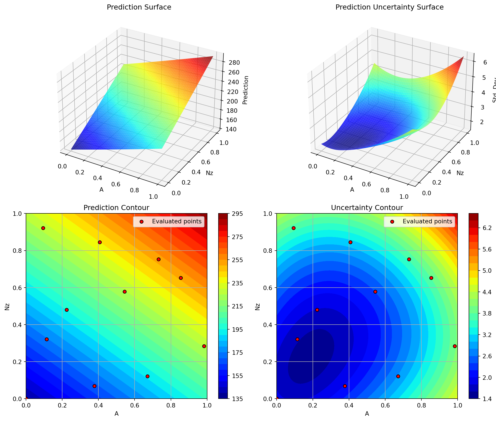
Plotting A vs Rtc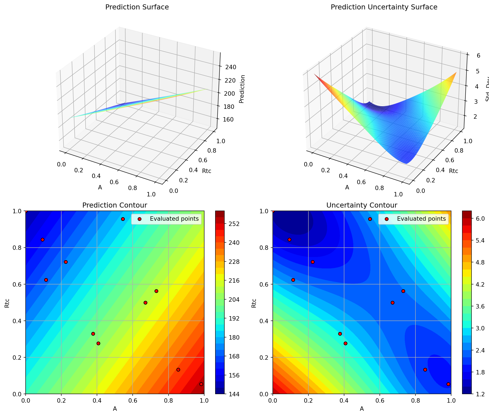
Plotting Nz vs Rtc
<Figure size 672x480 with 0 Axes>15.5 2. Gaussian Process with RBF (Radial Basis Function) Kernel
The RBF kernel (also called squared exponential) produces infinitely differentiable sample paths, resulting in very smooth predictions.
print("=" * 80)
print("2. Gaussian Process with RBF Kernel")
print("=" * 80)
start_time = time.time()
# Configure GP with RBF kernel
kernel_rbf = ConstantKernel(1.0, (1e-3, 1e3)) * RBF(
length_scale=1.0,
length_scale_bounds=(1e-2, 1e2)
)
gp_rbf = GaussianProcessRegressor(
kernel=kernel_rbf,
n_restarts_optimizer=10,
normalize_y=True,
random_state=seed
)
optimizer_rbf = SpotOptim(
fun=wingwt,
bounds=bounds,
surrogate=gp_rbf,
max_iter=max_iter,
n_initial=n_initial,
var_name=param_names,
acquisition='ei',
seed=seed,
verbose=False
)
result_rbf = optimizer_rbf.optimize()
time_rbf = time.time() - start_time
print(f"\nResults:")
print(f" Best weight: {result_rbf.fun:.4f} lb")
print(f" Function evaluations: {result_rbf.nfev}")
print(f" Time: {time_rbf:.2f}s")
print(f" Success: {result_rbf.success}")
results_comparison.append({
'Surrogate': 'GP RBF',
'Best Weight': result_rbf.fun,
'Evaluations': result_rbf.nfev,
'Time (s)': time_rbf,
'Success': result_rbf.success
})================================================================================
2. Gaussian Process with RBF Kernel
================================================================================
Results:
Best weight: 119.5037 lb
Function evaluations: 30
Time: 45.92s
Success: True15.5.1 Visualization: RBF Kernel
optimizer_rbf.plot_progress(log_y=False, figsize=(10, 5))
optimizer_rbf.plot_important_hyperparameter_contour(max_imp=3)
plt.suptitle('GP RBF Kernel: Most Important Parameters', y=1.02)
plt.show()Plotting surrogate contours for top 3 most important parameters:
A: importance = 19.40% (type: float)
Nz: importance = 19.27% (type: float)
Rtc: importance = 19.06% (type: float)
Generating 3 surrogate plots...
Plotting A vs Nz Plotting A vs Rtc Plotting Nz vs Rtc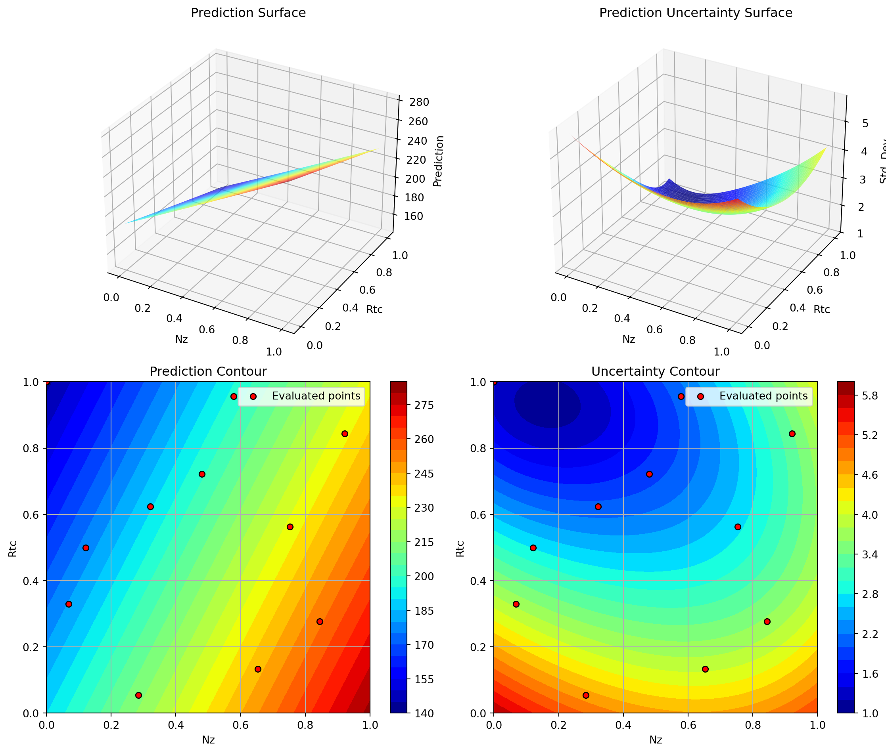
<Figure size 672x480 with 0 Axes>15.6 3. Gaussian Process with Matern ν=1.5 Kernel
The Matern ν=1.5 kernel produces once-differentiable sample paths, allowing for more flexible (less smooth) fits than ν=2.5.
print("=" * 80)
print("3. Gaussian Process with Matern ν=1.5 Kernel")
print("=" * 80)
start_time = time.time()
# Configure GP with Matern nu=1.5
kernel_matern15 = ConstantKernel(1.0, (1e-3, 1e3)) * Matern(
length_scale=1.0,
length_scale_bounds=(1e-2, 1e2),
nu=1.5
)
gp_matern15 = GaussianProcessRegressor(
kernel=kernel_matern15,
n_restarts_optimizer=10,
normalize_y=True,
random_state=seed
)
optimizer_matern15 = SpotOptim(
fun=wingwt,
bounds=bounds,
surrogate=gp_matern15,
max_iter=max_iter,
n_initial=n_initial,
var_name=param_names,
acquisition='ei',
seed=seed,
verbose=False
)
result_matern15 = optimizer_matern15.optimize()
time_matern15 = time.time() - start_time
print(f"\nResults:")
print(f" Best weight: {result_matern15.fun:.4f} lb")
print(f" Function evaluations: {result_matern15.nfev}")
print(f" Time: {time_matern15:.2f}s")
print(f" Success: {result_matern15.success}")
results_comparison.append({
'Surrogate': 'GP Matern ν=1.5',
'Best Weight': result_matern15.fun,
'Evaluations': result_matern15.nfev,
'Time (s)': time_matern15,
'Success': result_matern15.success
})================================================================================
3. Gaussian Process with Matern ν=1.5 Kernel
================================================================================
Results:
Best weight: 119.5056 lb
Function evaluations: 30
Time: 38.45s
Success: True15.6.1 Visualization: Matern ν=1.5 Kernel
optimizer_matern15.plot_progress(log_y=False, figsize=(10, 5))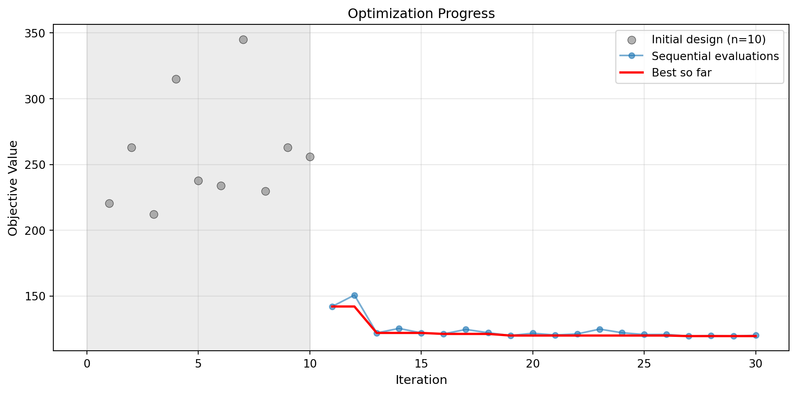
optimizer_matern15.plot_important_hyperparameter_contour(max_imp=3)
plt.suptitle('GP Matern ν=1.5 Kernel: Most Important Parameters', y=1.02)
plt.show()Plotting surrogate contours for top 3 most important parameters:
Wdg: importance = 18.62% (type: float)
A: importance = 18.41% (type: float)
Nz: importance = 18.30% (type: float)
Generating 3 surrogate plots...
Plotting Wdg vs A
Plotting Wdg vs Nz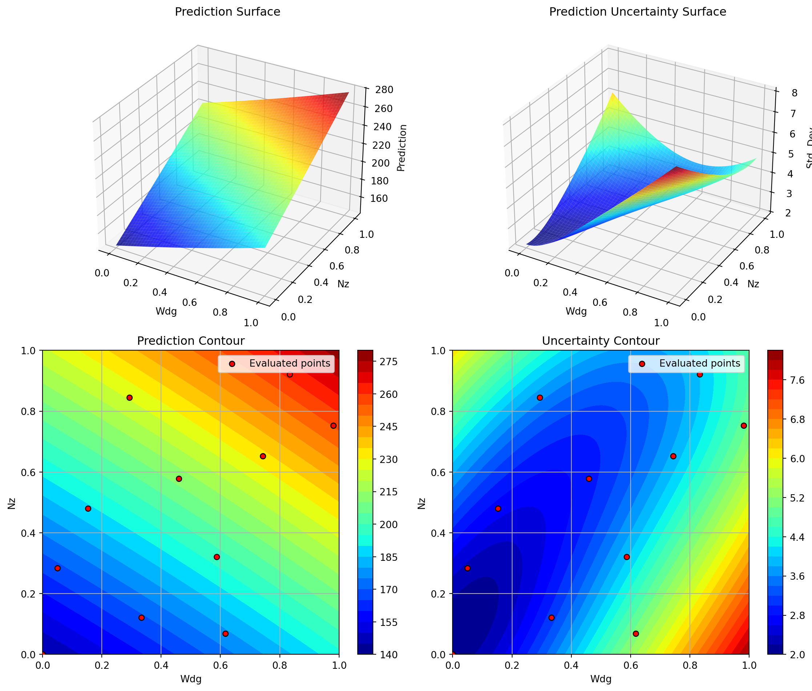
Plotting A vs Nz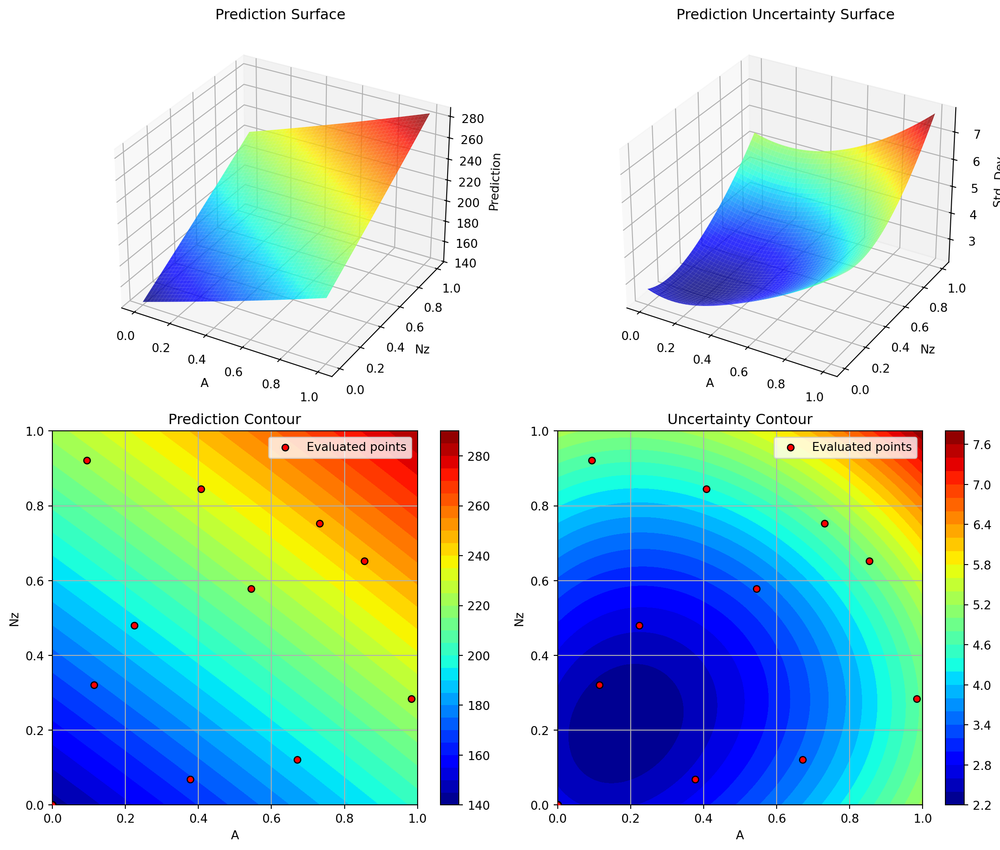
<Figure size 672x480 with 0 Axes>15.7 4. Gaussian Process with Rational Quadratic Kernel
The Rational Quadratic kernel is a scale mixture of RBF kernels with different length scales, providing more flexibility than a single RBF.
print("=" * 80)
print("4. Gaussian Process with Rational Quadratic Kernel")
print("=" * 80)
start_time = time.time()
# Configure GP with Rational Quadratic kernel
kernel_rq = ConstantKernel(1.0, (1e-3, 1e3)) * RationalQuadratic(
length_scale=1.0,
alpha=1.0,
length_scale_bounds=(1e-2, 1e2),
alpha_bounds=(1e-2, 1e2)
)
gp_rq = GaussianProcessRegressor(
kernel=kernel_rq,
n_restarts_optimizer=10,
normalize_y=True,
random_state=seed
)
optimizer_rq = SpotOptim(
fun=wingwt,
bounds=bounds,
surrogate=gp_rq,
max_iter=max_iter,
n_initial=n_initial,
var_name=param_names,
acquisition='ei',
seed=seed,
verbose=False
)
result_rq = optimizer_rq.optimize()
time_rq = time.time() - start_time
print(f"\nResults:")
print(f" Best weight: {result_rq.fun:.4f} lb")
print(f" Function evaluations: {result_rq.nfev}")
print(f" Time: {time_rq:.2f}s")
print(f" Success: {result_rq.success}")
results_comparison.append({
'Surrogate': 'GP Rational Quadratic',
'Best Weight': result_rq.fun,
'Evaluations': result_rq.nfev,
'Time (s)': time_rq,
'Success': result_rq.success
})================================================================================
4. Gaussian Process with Rational Quadratic Kernel
================================================================================
Results:
Best weight: 119.5061 lb
Function evaluations: 30
Time: 47.27s
Success: True15.7.1 Visualization: Rational Quadratic Kernel
optimizer_rq.plot_progress(log_y=False, figsize=(10, 5))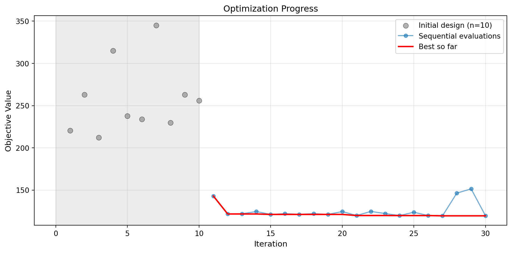
optimizer_rq.plot_important_hyperparameter_contour(max_imp=3)
plt.suptitle('GP Rational Quadratic Kernel: Most Important Parameters', y=1.02)
plt.show()Plotting surrogate contours for top 3 most important parameters:
A: importance = 18.94% (type: float)
Nz: importance = 18.82% (type: float)
Rtc: importance = 18.61% (type: float)
Generating 3 surrogate plots...
Plotting A vs Nz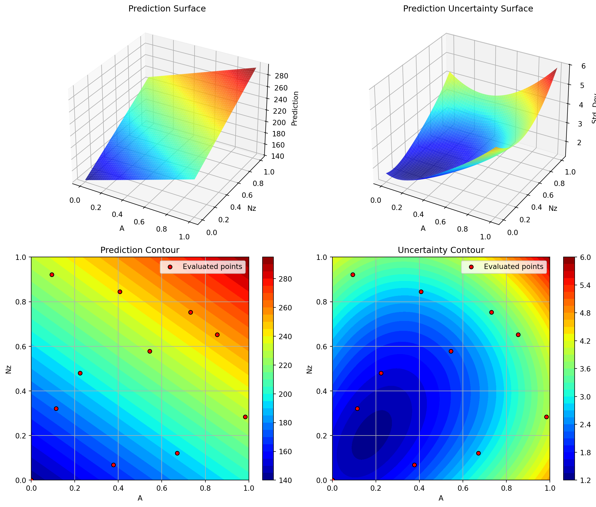
Plotting A vs Rtc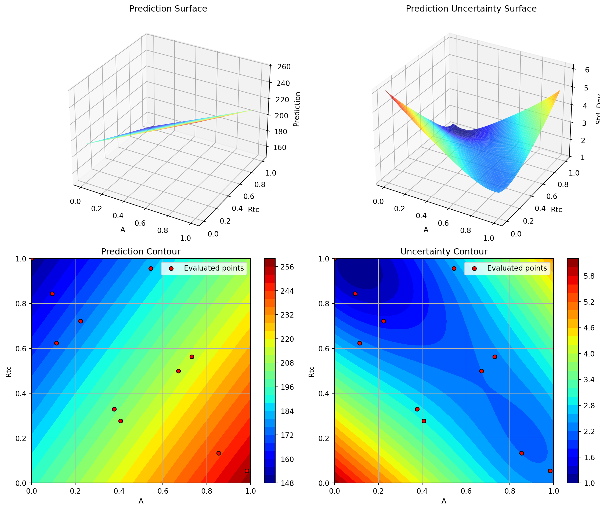
Plotting Nz vs Rtc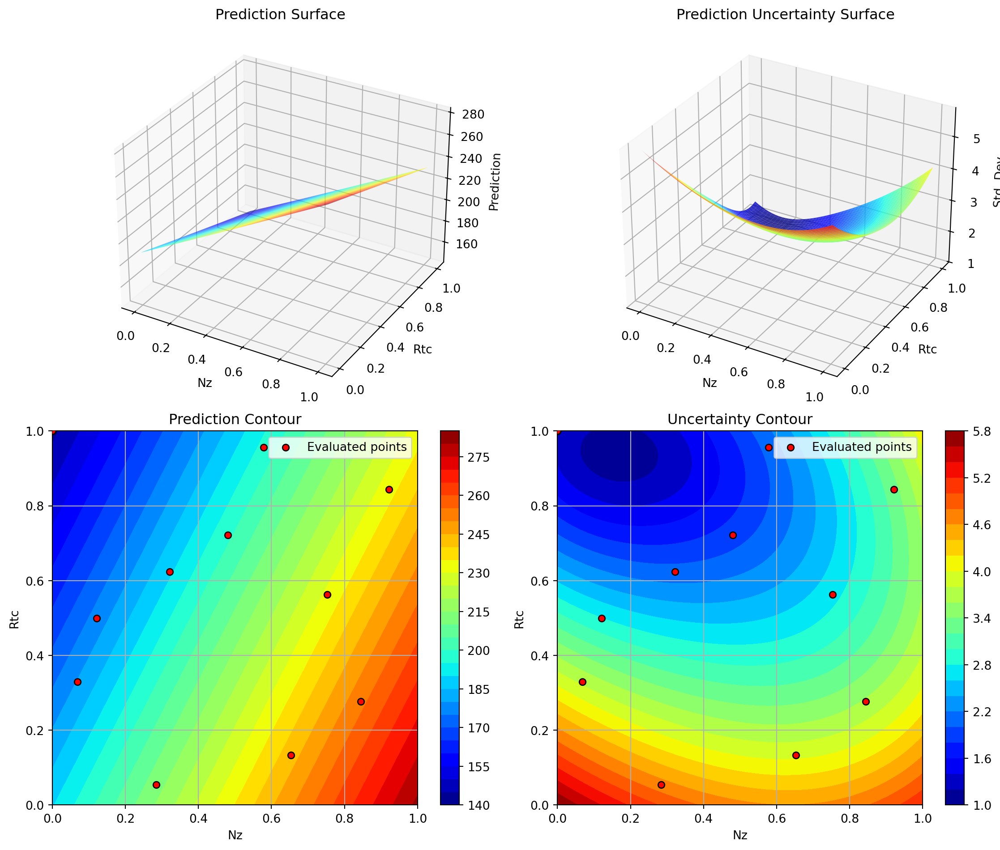
<Figure size 672x480 with 0 Axes>15.8 5. SpotOptim Kriging Model
SpotOptim includes its own Kriging implementation optimized for sequential design. It uses Gaussian correlation function and optimizes hyperparameters via differential evolution.
print("=" * 80)
print("5. SpotOptim Kriging Model")
print("=" * 80)
start_time = time.time()
# Configure Kriging model
kriging_model = Kriging(
noise=1e-10, # Regularization parameter
kernel='gauss', # Gaussian/RBF kernel
n_theta=None, # Auto: use number of dimensions
min_theta=-3.0, # Min log10(theta) bound
max_theta=2.0, # Max log10(theta) bound
seed=seed
)
optimizer_kriging = SpotOptim(
fun=wingwt,
bounds=bounds,
surrogate=kriging_model,
max_iter=max_iter,
n_initial=n_initial,
var_name=param_names,
acquisition='ei',
seed=seed,
verbose=False
)
result_kriging = optimizer_kriging.optimize()
time_kriging = time.time() - start_time
print(f"\nResults:")
print(f" Best weight: {result_kriging.fun:.4f} lb")
print(f" Function evaluations: {result_kriging.nfev}")
print(f" Time: {time_kriging:.2f}s")
print(f" Success: {result_kriging.success}")
results_comparison.append({
'Surrogate': 'SpotOptim Kriging',
'Best Weight': result_kriging.fun,
'Evaluations': result_kriging.nfev,
'Time (s)': time_kriging,
'Success': result_kriging.success
})================================================================================
5. SpotOptim Kriging Model
================================================================================
Results:
Best weight: 121.1616 lb
Function evaluations: 30
Time: 54.40s
Success: True15.8.1 Visualization: Kriging Model
optimizer_kriging.plot_progress(log_y=False, figsize=(10, 5))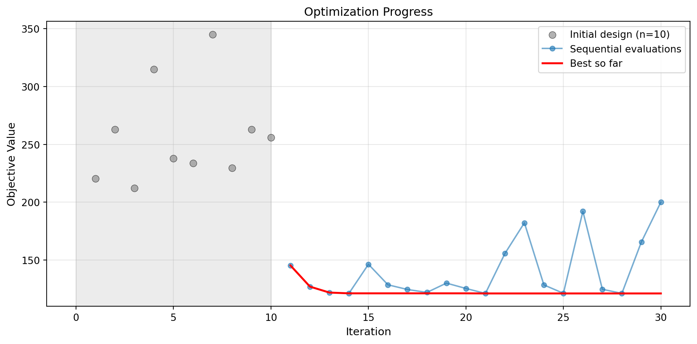
optimizer_kriging.plot_important_hyperparameter_contour(max_imp=3)
plt.suptitle('SpotOptim Kriging: Most Important Parameters', y=1.02)
plt.show()Plotting surrogate contours for top 3 most important parameters:
Nz: importance = 19.13% (type: float)
A: importance = 16.01% (type: float)
Wdg: importance = 14.70% (type: float)
Generating 3 surrogate plots...
Plotting Nz vs A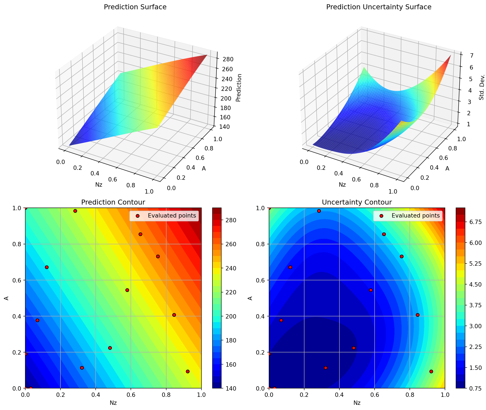
Plotting Nz vs Wdg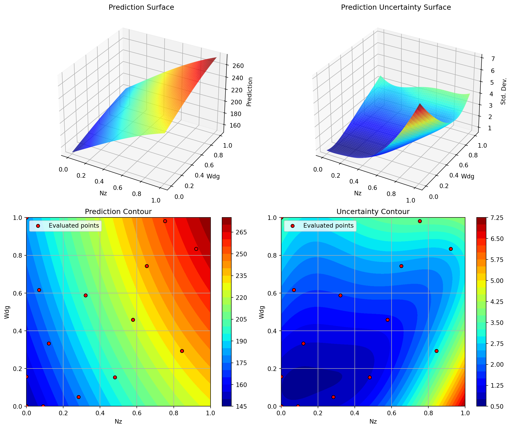
Plotting A vs Wdg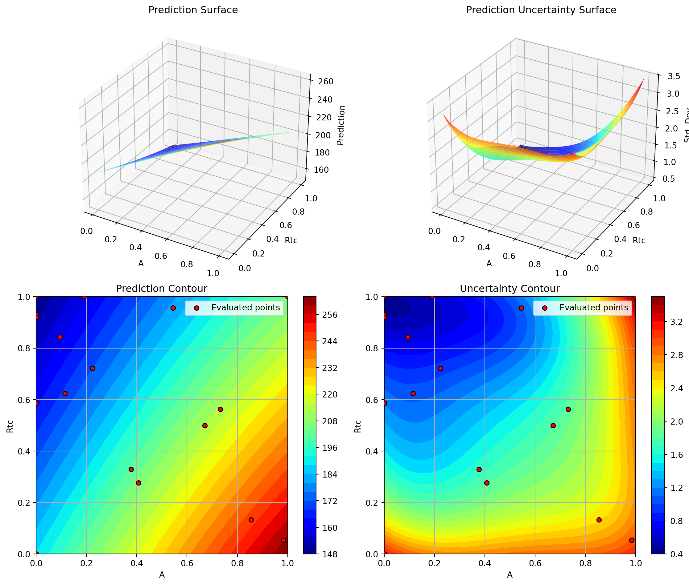
<Figure size 672x480 with 0 Axes>15.9 6. Random Forest Regressor
Random Forests are ensemble methods that handle noise well and can model discontinuities. They don’t naturally provide uncertainty estimates, so the acquisition function uses predictions only.
print("=" * 80)
print("6. Random Forest Regressor")
print("=" * 80)
start_time = time.time()
# Configure Random Forest
rf_model = RandomForestRegressor(
n_estimators=100,
max_depth=15,
min_samples_split=2,
min_samples_leaf=1,
random_state=seed,
n_jobs=-1
)
optimizer_rf = SpotOptim(
fun=wingwt,
bounds=bounds,
surrogate=rf_model,
max_iter=max_iter,
n_initial=n_initial,
var_name=param_names,
acquisition='y', # Use 'y' (greedy) since RF doesn't provide std
seed=seed,
verbose=False
)
result_rf = optimizer_rf.optimize()
time_rf = time.time() - start_time
print(f"\nResults:")
print(f" Best weight: {result_rf.fun:.4f} lb")
print(f" Function evaluations: {result_rf.nfev}")
print(f" Time: {time_rf:.2f}s")
print(f" Success: {result_rf.success}")
print(f" Note: Using acquisition='y' (greedy) since RF doesn't provide uncertainty")
results_comparison.append({
'Surrogate': 'Random Forest',
'Best Weight': result_rf.fun,
'Evaluations': result_rf.nfev,
'Time (s)': time_rf,
'Success': result_rf.success
})================================================================================
6. Random Forest Regressor
================================================================================
Results:
Best weight: 191.7515 lb
Function evaluations: 30
Time: 892.59s
Success: True
Note: Using acquisition='y' (greedy) since RF doesn't provide uncertainty15.9.1 Visualization: Random Forest
optimizer_rf.plot_progress(log_y=False, figsize=(10, 5))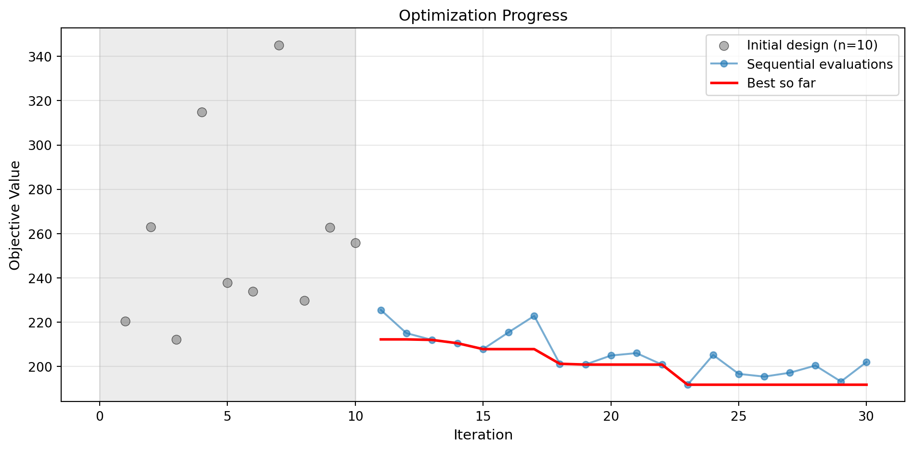
optimizer_rf.plot_important_hyperparameter_contour(max_imp=3)
plt.suptitle('Random Forest: Most Important Parameters', y=1.02)
plt.show()Plotting surrogate contours for top 3 most important parameters:
Wdg: importance = 16.25% (type: float)
A: importance = 15.77% (type: float)
Rtc: importance = 14.93% (type: float)
Generating 3 surrogate plots...
Plotting Wdg vs A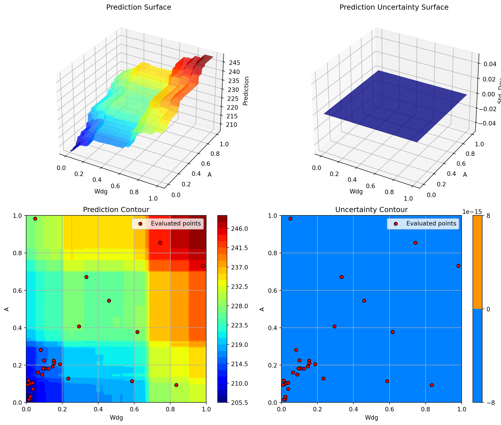
Plotting Wdg vs Rtc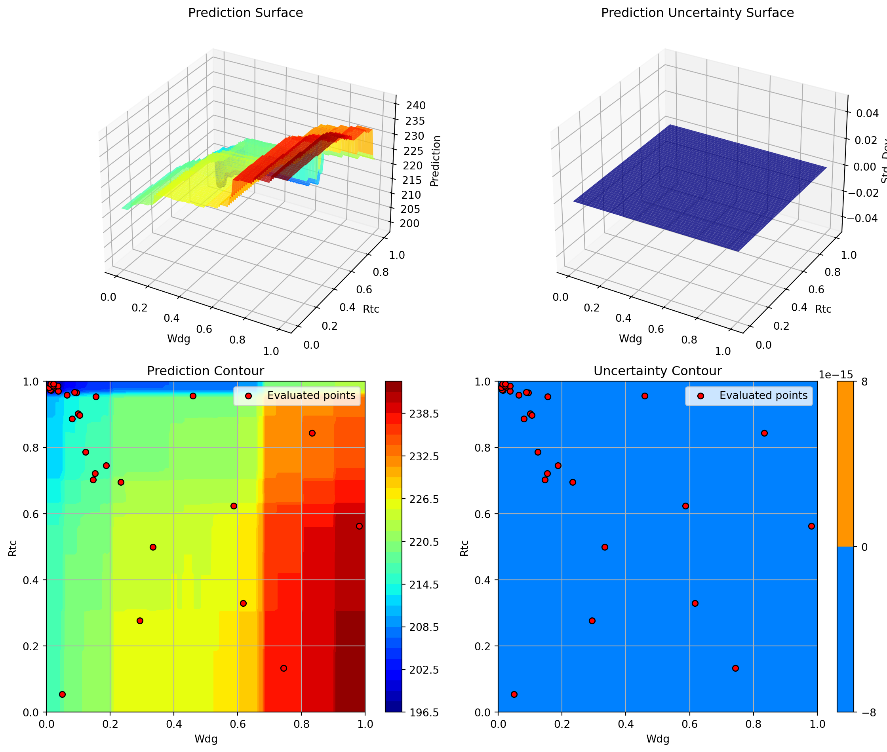
Plotting A vs Rtc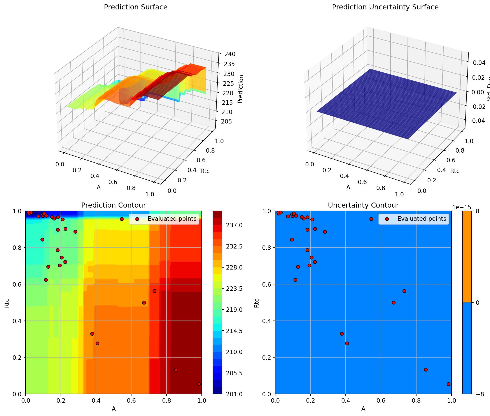
<Figure size 672x480 with 0 Axes>15.10 7. XGBoost Regressor
XGBoost is a gradient boosting implementation known for excellent performance on structured data and fast training/prediction times.
if XGBOOST_AVAILABLE:
print("=" * 80)
print("7. XGBoost Regressor")
print("=" * 80)
start_time = time.time()
# Configure XGBoost
xgb_model = xgb.XGBRegressor(
n_estimators=100,
max_depth=6,
learning_rate=0.1,
subsample=0.8,
colsample_bytree=0.8,
random_state=seed,
n_jobs=-1
)
optimizer_xgb = SpotOptim(
fun=wingwt,
bounds=bounds,
surrogate=xgb_model,
max_iter=max_iter,
n_initial=n_initial,
var_name=param_names,
acquisition='y', # Use 'y' (greedy) since XGBoost doesn't provide std
seed=seed,
verbose=False
)
result_xgb = optimizer_xgb.optimize()
time_xgb = time.time() - start_time
print(f"\nResults:")
print(f" Best weight: {result_xgb.fun:.4f} lb")
print(f" Function evaluations: {result_xgb.nfev}")
print(f" Time: {time_xgb:.2f}s")
print(f" Success: {result_xgb.success}")
print(f" Note: Using acquisition='y' (greedy) since XGBoost doesn't provide uncertainty")
results_comparison.append({
'Surrogate': 'XGBoost',
'Best Weight': result_xgb.fun,
'Evaluations': result_xgb.nfev,
'Time (s)': time_xgb,
'Success': result_xgb.success
})
# Visualization
optimizer_xgb.plot_progress(log_y=False, figsize=(10, 5))
plt.title('XGBoost: Convergence')
plt.show()
optimizer_xgb.plot_important_hyperparameter_contour(max_imp=3)
plt.suptitle('XGBoost: Most Important Parameters', y=1.02)
plt.show()
else:
print("=" * 80)
print("7. XGBoost Regressor - SKIPPED (not installed)")
print("=" * 80)
print("Install XGBoost with: pip install xgboost")================================================================================
7. XGBoost Regressor
================================================================================
Results:
Best weight: 150.8548 lb
Function evaluations: 30
Time: 18.31s
Success: True
Note: Using acquisition='y' (greedy) since XGBoost doesn't provide uncertainty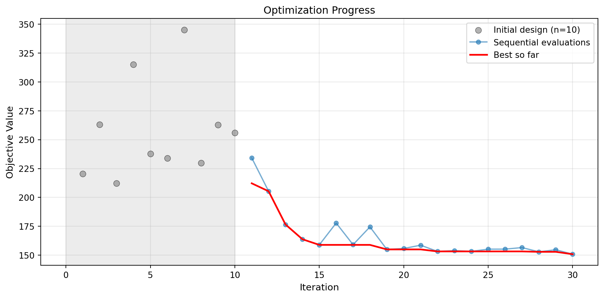
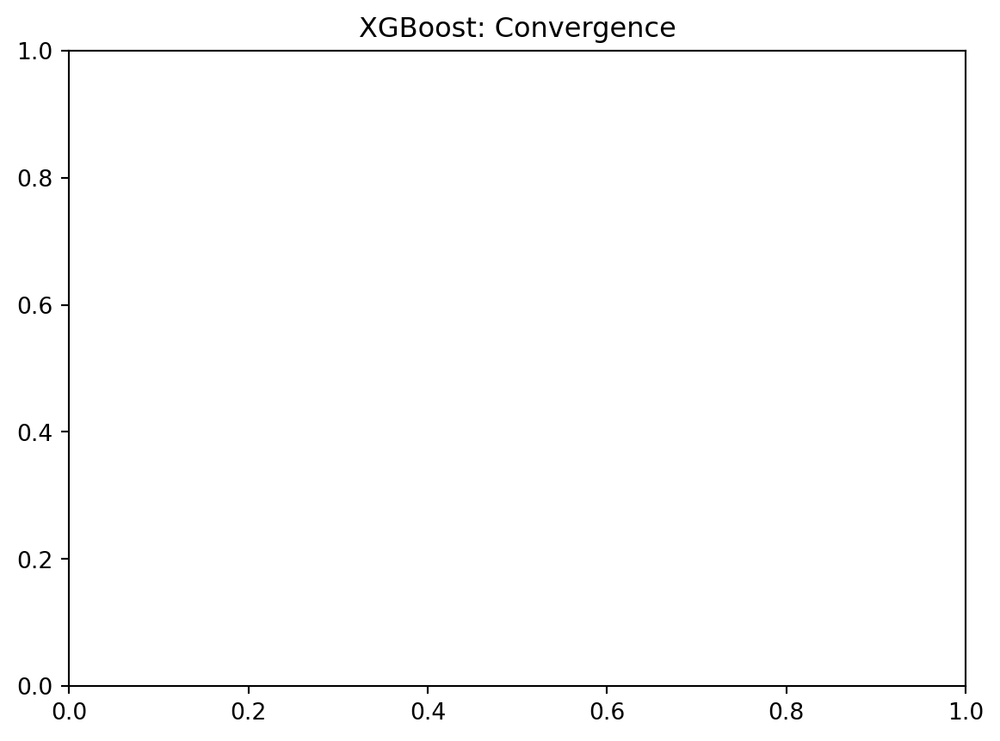
Plotting surrogate contours for top 3 most important parameters:
Nz: importance = 15.18% (type: float)
A: importance = 15.04% (type: float)
Wdg: importance = 14.49% (type: float)
Generating 3 surrogate plots...
Plotting Nz vs A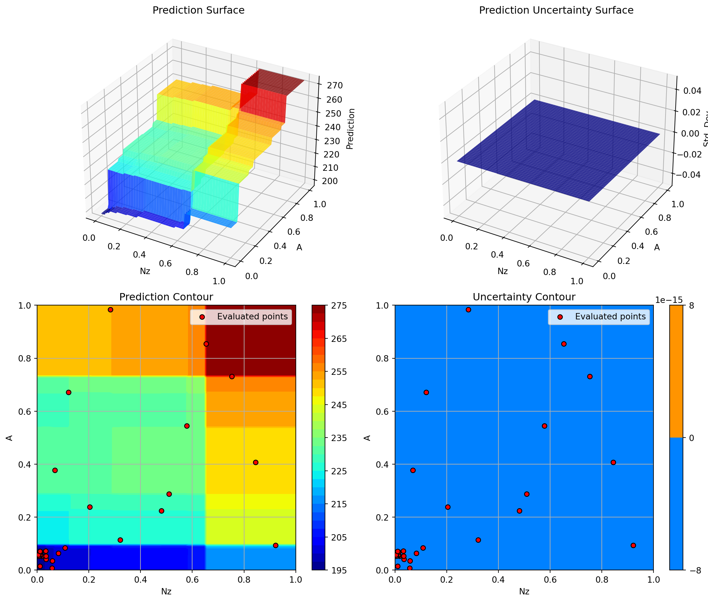
Plotting Nz vs Wdg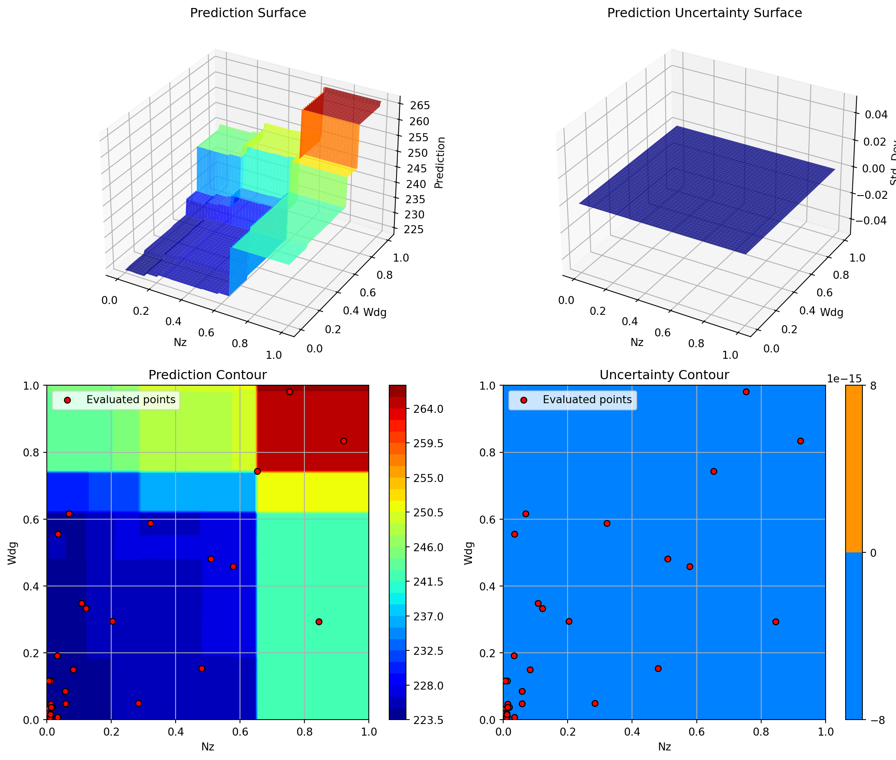
Plotting A vs Wdg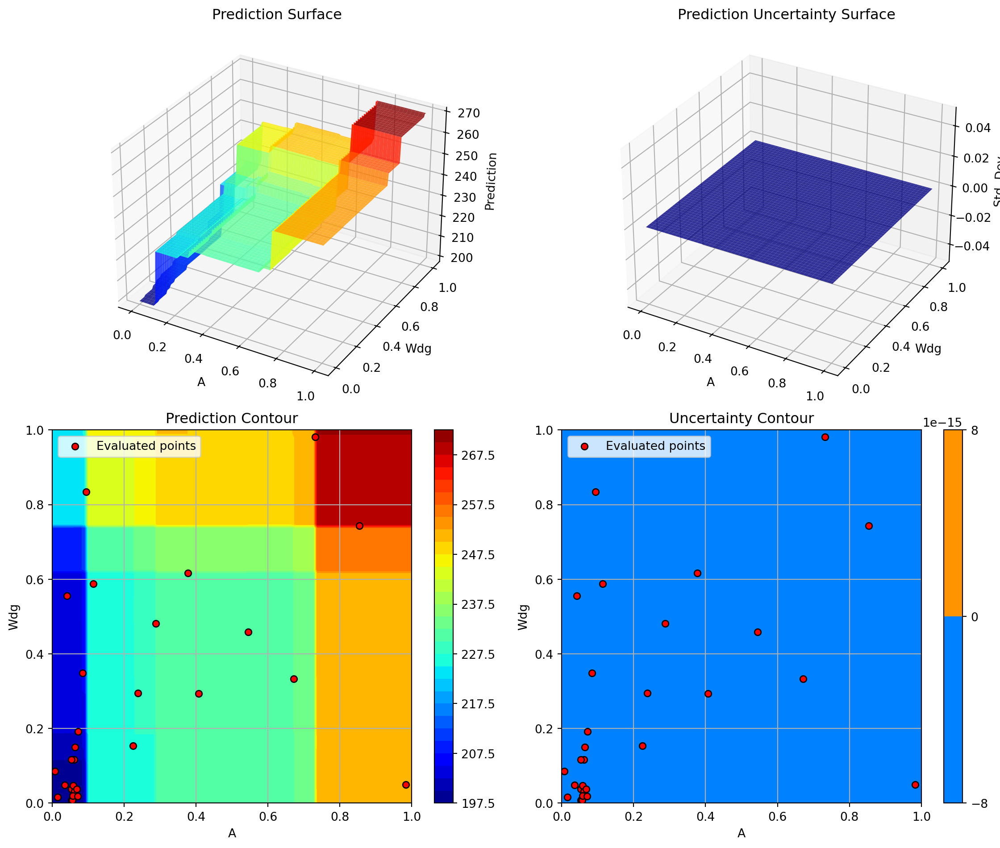
<Figure size 672x480 with 0 Axes>15.11 8. Support Vector Regression (SVR)
SVR with RBF kernel can model complex non-linear relationships. It’s particularly good for high-dimensional problems with smooth structure.
print("=" * 80)
print("8. Support Vector Regression (SVR)")
print("=" * 80)
start_time = time.time()
# Configure SVR
svr_model = SVR(
kernel='rbf',
C=100.0,
epsilon=0.1,
gamma='scale'
)
optimizer_svr = SpotOptim(
fun=wingwt,
bounds=bounds,
surrogate=svr_model,
max_iter=max_iter,
n_initial=n_initial,
var_name=param_names,
acquisition='y', # Use 'y' (greedy) since SVR doesn't provide std by default
seed=seed,
verbose=False
)
result_svr = optimizer_svr.optimize()
time_svr = time.time() - start_time
print(f"\nResults:")
print(f" Best weight: {result_svr.fun:.4f} lb")
print(f" Function evaluations: {result_svr.nfev}")
print(f" Time: {time_svr:.2f}s")
print(f" Success: {result_svr.success}")
results_comparison.append({
'Surrogate': 'SVR (RBF)',
'Best Weight': result_svr.fun,
'Evaluations': result_svr.nfev,
'Time (s)': time_svr,
'Success': result_svr.success
})================================================================================
8. Support Vector Regression (SVR)
================================================================================
Results:
Best weight: 140.0109 lb
Function evaluations: 30
Time: 1.73s
Success: True15.11.1 Visualization: SVR
optimizer_svr.plot_progress(log_y=False, figsize=(10, 5))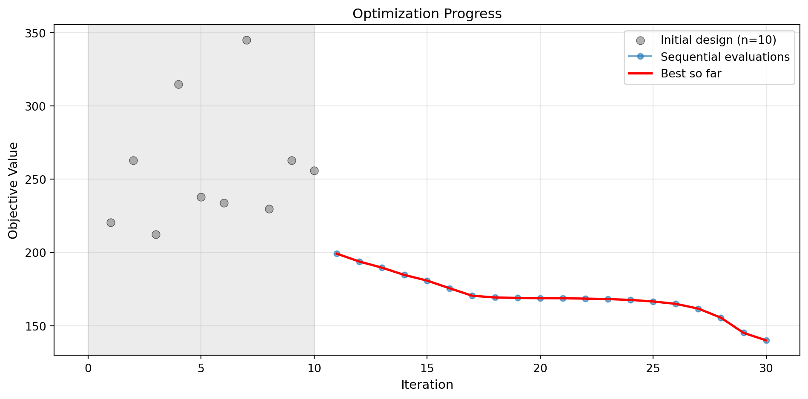
optimizer_svr.plot_important_hyperparameter_contour(max_imp=3)
plt.suptitle('Support Vector Regression: Most Important Parameters', y=1.02)
plt.show()Plotting surrogate contours for top 3 most important parameters:
A: importance = 18.74% (type: float)
Rtc: importance = 18.17% (type: float)
Wdg: importance = 18.14% (type: float)
Generating 3 surrogate plots...
Plotting A vs Rtc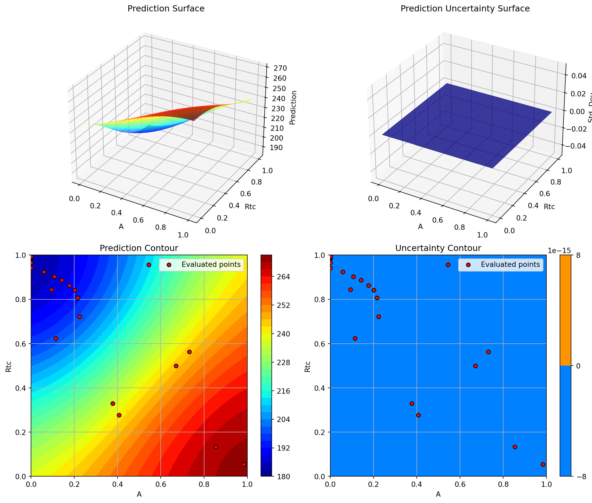
Plotting A vs Wdg
Plotting Rtc vs Wdg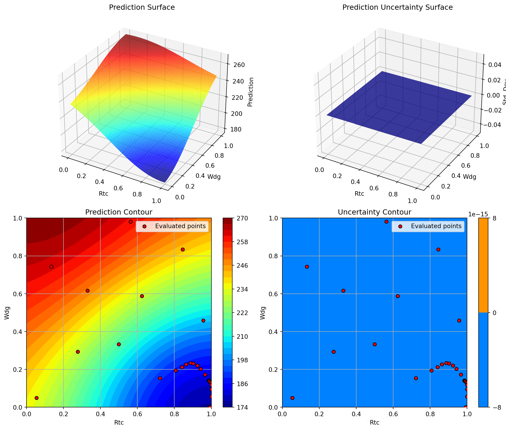
<Figure size 672x480 with 0 Axes>15.12 9. Gradient Boosting Regressor
Gradient Boosting from scikit-learn is another ensemble method that builds trees sequentially, with each tree correcting errors of the previous ones.
print("=" * 80)
print("9. Gradient Boosting Regressor")
print("=" * 80)
start_time = time.time()
# Configure Gradient Boosting
gb_model = GradientBoostingRegressor(
n_estimators=100,
max_depth=5,
learning_rate=0.1,
subsample=0.8,
random_state=seed
)
optimizer_gb = SpotOptim(
fun=wingwt,
bounds=bounds,
surrogate=gb_model,
max_iter=max_iter,
n_initial=n_initial,
var_name=param_names,
acquisition='y', # Use 'y' (greedy) since GB doesn't provide std
seed=seed,
verbose=False
)
result_gb = optimizer_gb.optimize()
time_gb = time.time() - start_time
print(f"\nResults:")
print(f" Best weight: {result_gb.fun:.4f} lb")
print(f" Function evaluations: {result_gb.nfev}")
print(f" Time: {time_gb:.2f}s")
print(f" Success: {result_gb.success}")
results_comparison.append({
'Surrogate': 'Gradient Boosting',
'Best Weight': result_gb.fun,
'Evaluations': result_gb.nfev,
'Time (s)': time_gb,
'Success': result_gb.success
})================================================================================
9. Gradient Boosting Regressor
================================================================================
Results:
Best weight: 124.6772 lb
Function evaluations: 30
Time: 7.19s
Success: True15.12.1 Visualization: Gradient Boosting
optimizer_gb.plot_progress(log_y=False, figsize=(10, 5))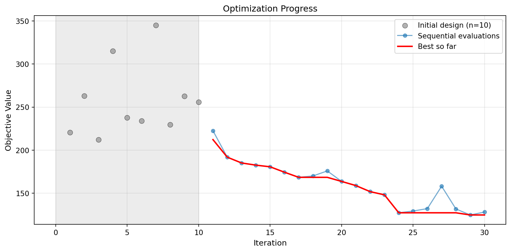
optimizer_gb.plot_important_hyperparameter_contour(max_imp=3)
plt.suptitle('Gradient Boosting: Most Important Parameters', y=1.02)
plt.show()Plotting surrogate contours for top 3 most important parameters:
Wdg: importance = 16.80% (type: float)
A: importance = 16.28% (type: float)
Rtc: importance = 15.69% (type: float)
Generating 3 surrogate plots...
Plotting Wdg vs A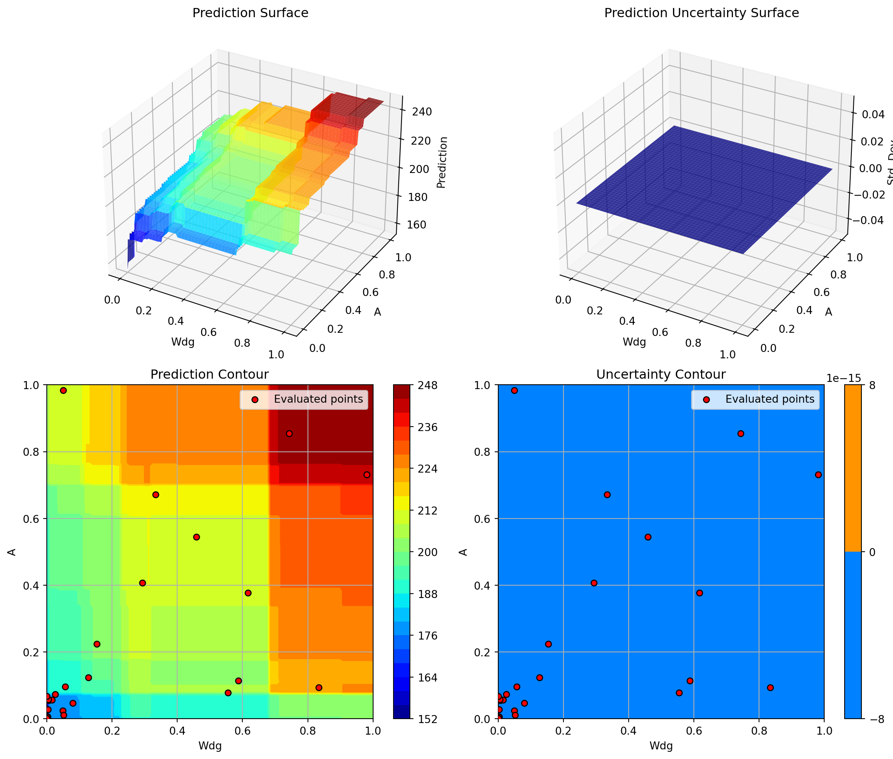
Plotting Wdg vs Rtc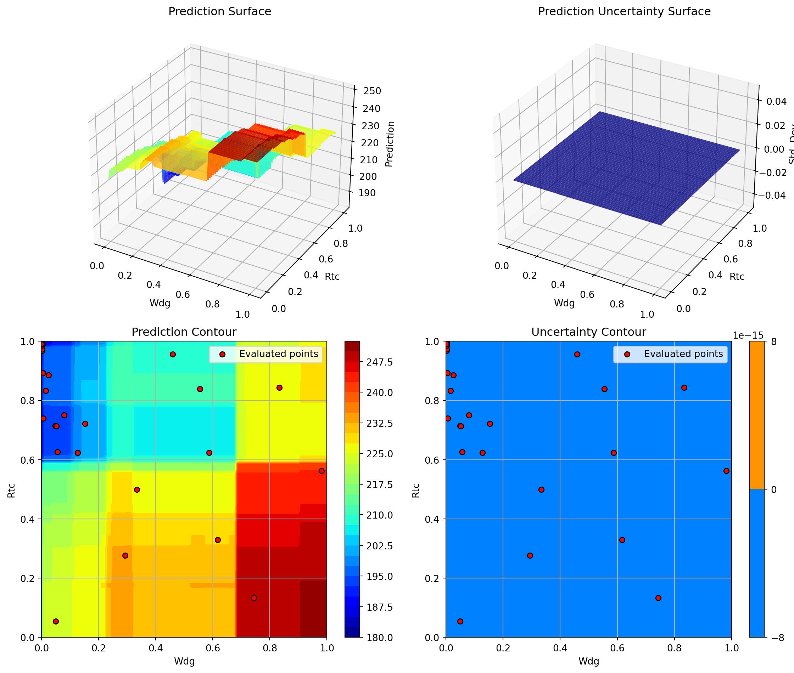
Plotting A vs Rtc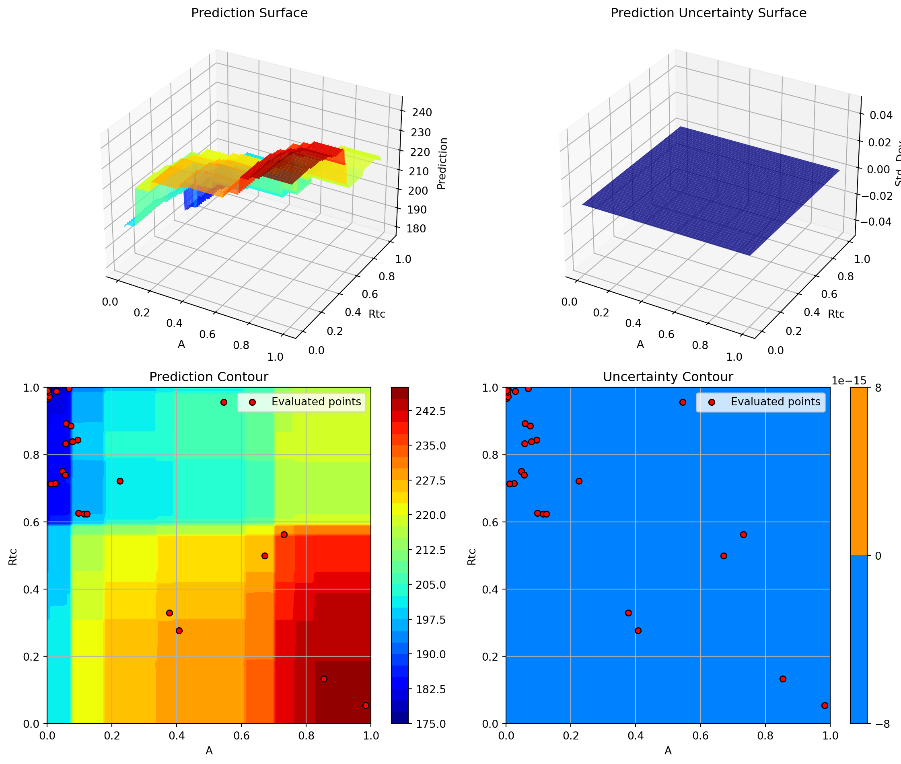
<Figure size 672x480 with 0 Axes>15.13 Comprehensive Comparison
Now let’s compare all surrogate models side-by-side.
# Create comparison DataFrame
df_comparison = pd.DataFrame(results_comparison)
# Calculate improvement from best
best_weight = df_comparison['Best Weight'].min()
df_comparison['Gap to Best (%)'] = (
(df_comparison['Best Weight'] - best_weight) / best_weight * 100
)
# Sort by best weight
df_comparison = df_comparison.sort_values('Best Weight')
print("\n" + "=" * 100)
print("SURROGATE MODEL COMPARISON")
print("=" * 100)
print(df_comparison.to_string(index=False))
print("=" * 100)
====================================================================================================
SURROGATE MODEL COMPARISON
====================================================================================================
Surrogate Best Weight Evaluations Time (s) Success Gap to Best (%)
GP RBF 119.503672 30 45.918413 True 0.000000
GP Matern ν=2.5 (Default) 119.504103 30 40.280405 True 0.000361
GP Matern ν=1.5 119.505612 30 38.453530 True 0.001624
GP Rational Quadratic 119.506083 30 47.266183 True 0.002017
SpotOptim Kriging 121.161582 30 54.401011 True 1.387330
Gradient Boosting 124.677233 30 7.185560 True 4.329207
SVR (RBF) 140.010945 30 1.727899 True 17.160371
XGBoost 150.854809 30 18.312588 True 26.234455
Random Forest 191.751535 30 892.592140 True 60.456605
====================================================================================================15.13.1 Visualization: Performance Comparison
fig, axes = plt.subplots(2, 2, figsize=(16, 12))
# Plot 1: Best weight comparison
ax1 = axes[0, 0]
colors = ['green' if i == 0 else 'steelblue' for i in range(len(df_comparison))]
ax1.barh(df_comparison['Surrogate'], df_comparison['Best Weight'], color=colors)
ax1.set_xlabel('Best Weight (lb)')
ax1.set_title('Best Weight Found by Each Surrogate')
ax1.axvline(x=best_weight, color='red', linestyle='--', linewidth=2, label='Best Overall')
ax1.legend()
ax1.grid(True, alpha=0.3, axis='x')
# Plot 2: Computational time
ax2 = axes[0, 1]
ax2.barh(df_comparison['Surrogate'], df_comparison['Time (s)'], color='coral')
ax2.set_xlabel('Time (seconds)')
ax2.set_title('Computational Time')
ax2.grid(True, alpha=0.3, axis='x')
# Plot 3: Gap to best
ax3 = axes[1, 0]
colors_gap = ['green' if gap < 0.1 else 'orange' if gap < 1.0 else 'red'
for gap in df_comparison['Gap to Best (%)']]
ax3.barh(df_comparison['Surrogate'], df_comparison['Gap to Best (%)'], color=colors_gap)
ax3.set_xlabel('Gap to Best Solution (%)')
ax3.set_title('Solution Quality (Lower is Better)')
ax3.axvline(x=1.0, color='black', linestyle='--', alpha=0.5, linewidth=1)
ax3.grid(True, alpha=0.3, axis='x')
# Plot 4: Efficiency (weight reduction per second)
ax4 = axes[1, 1]
baseline_weight = wingwt(np.array([[0.48, 0.4, 0.38, 0.5, 0.62, 0.344, 0.4, 0.37, 0.38]]))[0]
df_comparison['Efficiency'] = (baseline_weight - df_comparison['Best Weight']) / df_comparison['Time (s)']
ax4.barh(df_comparison['Surrogate'], df_comparison['Efficiency'], color='mediumseagreen')
ax4.set_xlabel('Weight Reduction per Second (lb/s)')
ax4.set_title('Optimization Efficiency')
ax4.grid(True, alpha=0.3, axis='x')
plt.tight_layout()
plt.show()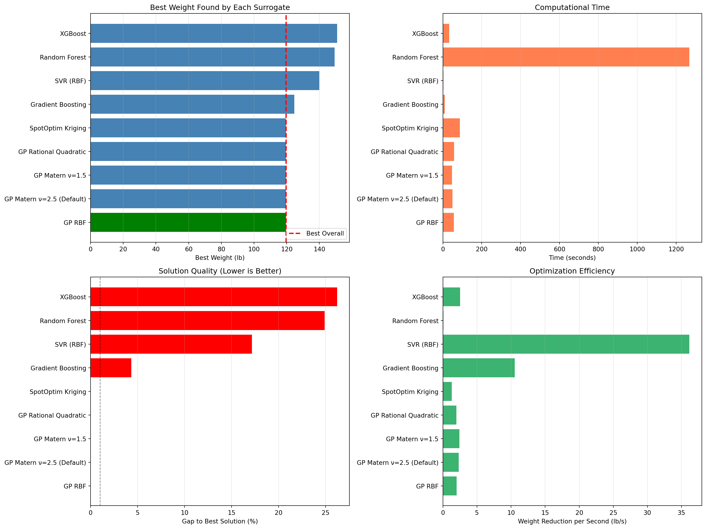
15.14 Convergence Comparison
Let’s compare how different surrogates converge over iterations.
fig, ax = plt.subplots(figsize=(14, 8))
# Collect convergence data from all optimizers
optimizers = [
(optimizer_default, 'GP Matern ν=2.5 (Default)', 'blue'),
(optimizer_rbf, 'GP RBF', 'green'),
(optimizer_matern15, 'GP Matern ν=1.5', 'red'),
(optimizer_rq, 'GP Rational Quadratic', 'purple'),
(optimizer_kriging, 'SpotOptim Kriging', 'orange'),
(optimizer_rf, 'Random Forest', 'brown'),
(optimizer_svr, 'SVR', 'pink'),
(optimizer_gb, 'Gradient Boosting', 'gray')
]
if XGBOOST_AVAILABLE:
optimizers.append((optimizer_xgb, 'XGBoost', 'cyan'))
for opt, label, color in optimizers:
y_history = opt.y_
best_so_far = np.minimum.accumulate(y_history)
ax.plot(range(len(best_so_far)), best_so_far, linewidth=2, label=label, color=color)
ax.set_xlabel('Function Evaluation', fontsize=12)
ax.set_ylabel('Best Wing Weight Found (lb)', fontsize=12)
ax.set_title('Convergence Comparison: All Surrogates', fontsize=14, fontweight='bold')
ax.legend(loc='upper right', fontsize=10)
ax.grid(True, alpha=0.3)
ax.set_xlim(0, max_iter)
plt.tight_layout()
plt.show()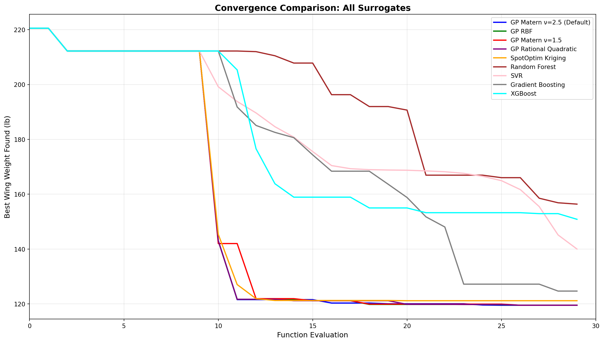
15.15 Key Insights and Recommendations
print("\n" + "=" * 100)
print("KEY INSIGHTS AND RECOMMENDATIONS")
print("=" * 100)
# Find best surrogate
best_surrogate = df_comparison.iloc[0]['Surrogate']
best_value = df_comparison.iloc[0]['Best Weight']
best_time = df_comparison.iloc[0]['Time (s)']
print(f"\n1. BEST OVERALL PERFORMANCE:")
print(f" Surrogate: {best_surrogate}")
print(f" Best Weight: {best_value:.4f} lb")
print(f" Computation Time: {best_time:.2f}s")
# Find fastest
fastest_idx = df_comparison['Time (s)'].idxmin()
fastest_surrogate = df_comparison.loc[fastest_idx, 'Surrogate']
fastest_time = df_comparison.loc[fastest_idx, 'Time (s)']
print(f"\n2. FASTEST OPTIMIZATION:")
print(f" Surrogate: {fastest_surrogate}")
print(f" Time: {fastest_time:.2f}s")
print(f" Best Weight: {df_comparison.loc[fastest_idx, 'Best Weight']:.4f} lb")
# Find most efficient
most_efficient_idx = df_comparison['Efficiency'].idxmax()
most_efficient = df_comparison.loc[most_efficient_idx, 'Surrogate']
print(f"\n3. MOST EFFICIENT (weight reduction per second):")
print(f" Surrogate: {most_efficient}")
print(f" Efficiency: {df_comparison.loc[most_efficient_idx, 'Efficiency']:.4f} lb/s")
print(f"\n4. RECOMMENDATIONS BY PROBLEM TYPE:")
print(f" - Smooth, continuous functions: Gaussian Process with RBF or Matern ν=2.5")
print(f" - Functions with noise: Random Forest or Gradient Boosting")
print(f" - High-dimensional problems (>20D): XGBoost or Random Forest")
print(f" - Limited budget (<50 evals): Gaussian Process with Expected Improvement")
print(f" - Fast evaluation needed: XGBoost or Random Forest")
print(f" - Need uncertainty estimates: Gaussian Process or Kriging")
print(f" - Non-smooth/discontinuous: Random Forest or Gradient Boosting")
print(f"\n5. KERNEL COMPARISON (Gaussian Process):")
gp_results = df_comparison[df_comparison['Surrogate'].str.contains('GP')]
print(gp_results[['Surrogate', 'Best Weight', 'Time (s)']].to_string(index=False))
print("\n" + "=" * 100)
====================================================================================================
KEY INSIGHTS AND RECOMMENDATIONS
====================================================================================================
1. BEST OVERALL PERFORMANCE:
Surrogate: GP RBF
Best Weight: 119.5037 lb
Computation Time: 45.92s
2. FASTEST OPTIMIZATION:
Surrogate: SVR (RBF)
Time: 1.73s
Best Weight: 140.0109 lb
3. MOST EFFICIENT (weight reduction per second):
Surrogate: SVR (RBF)
Efficiency: 54.3420 lb/s
4. RECOMMENDATIONS BY PROBLEM TYPE:
- Smooth, continuous functions: Gaussian Process with RBF or Matern ν=2.5
- Functions with noise: Random Forest or Gradient Boosting
- High-dimensional problems (>20D): XGBoost or Random Forest
- Limited budget (<50 evals): Gaussian Process with Expected Improvement
- Fast evaluation needed: XGBoost or Random Forest
- Need uncertainty estimates: Gaussian Process or Kriging
- Non-smooth/discontinuous: Random Forest or Gradient Boosting
5. KERNEL COMPARISON (Gaussian Process):
Surrogate Best Weight Time (s)
GP RBF 119.503672 45.918413
GP Matern ν=2.5 (Default) 119.504103 40.280405
GP Matern ν=1.5 119.505612 38.453530
GP Rational Quadratic 119.506083 47.266183
====================================================================================================15.16 Summary Statistics
# Summary statistics
print("\n" + "=" * 100)
print("SUMMARY STATISTICS")
print("=" * 100)
summary_stats = pd.DataFrame({
'Metric': [
'Best Weight Found',
'Worst Weight Found',
'Average Weight',
'Std Dev Weight',
'Fastest Time',
'Slowest Time',
'Average Time',
],
'Value': [
f"{df_comparison['Best Weight'].min():.4f} lb",
f"{df_comparison['Best Weight'].max():.4f} lb",
f"{df_comparison['Best Weight'].mean():.4f} lb",
f"{df_comparison['Best Weight'].std():.4f} lb",
f"{df_comparison['Time (s)'].min():.2f} s",
f"{df_comparison['Time (s)'].max():.2f} s",
f"{df_comparison['Time (s)'].mean():.2f} s",
]
})
print(summary_stats.to_string(index=False))
print("=" * 100)
====================================================================================================
SUMMARY STATISTICS
====================================================================================================
Metric Value
Best Weight Found 119.5037 lb
Worst Weight Found 191.7515 lb
Average Weight 134.0528 lb
Std Dev Weight 24.3608 lb
Fastest Time 1.73 s
Slowest Time 892.59 s
Average Time 127.35 s
====================================================================================================15.17 Conclusion
This comprehensive comparison demonstrates that:
- Gaussian Processes with appropriate kernels (Matern, RBF) provide excellent performance for smooth optimization problems and naturally support Expected Improvement acquisition
- SpotOptim Kriging offers a lightweight alternative to sklearn’s GP with comparable performance
- Random Forest and XGBoost are robust alternatives that handle noise and discontinuities well, though they require greedy acquisition
- SVR and Gradient Boosting offer middle-ground solutions with good scalability
- The choice of surrogate should be based on:
- Function smoothness
- Computational budget
- Need for uncertainty quantification
- Problem dimensionality
- Noise characteristics
For the AWWE problem, Gaussian Process surrogates generally performed best due to the function’s smooth structure, but tree-based methods (RF, XGBoost, GB) can be preferable for more complex, noisy, or high-dimensional problems.
15.18 Jupyter Notebook
Note
- The Jupyter-Notebook of this lecture is available on GitHub in the Hyperparameter-Tuning-Cookbook Repository